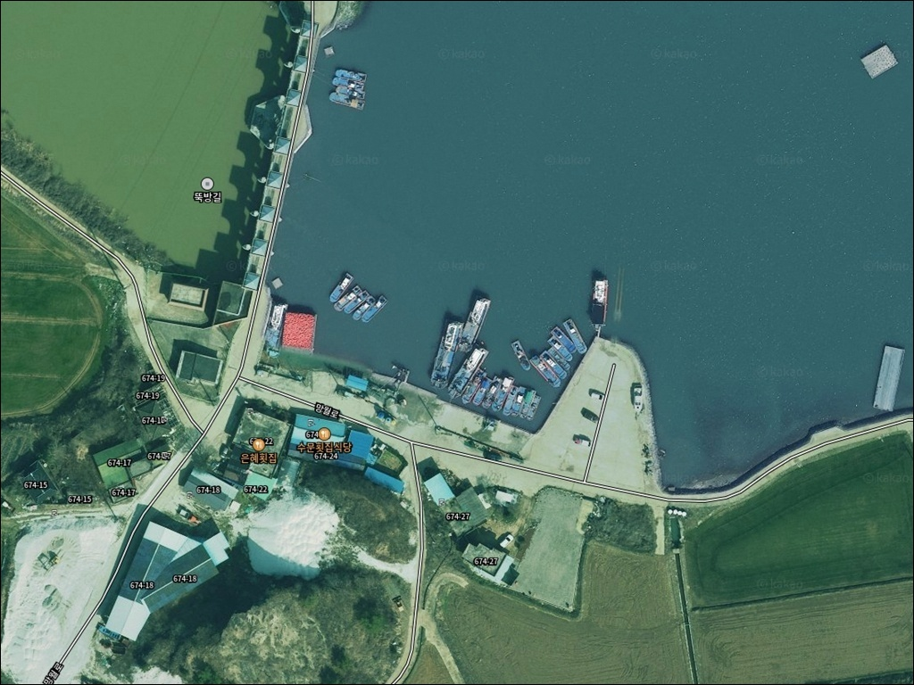
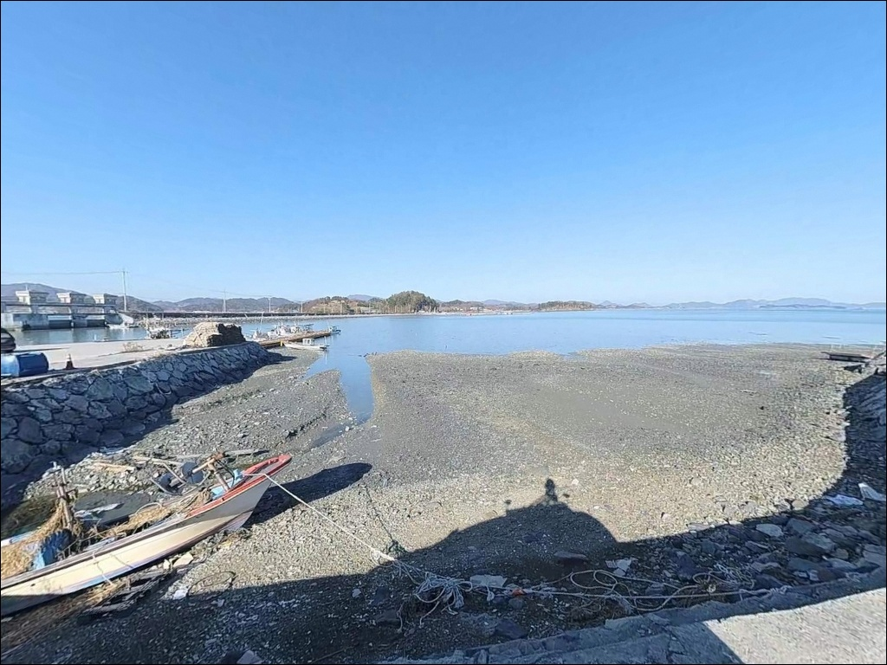
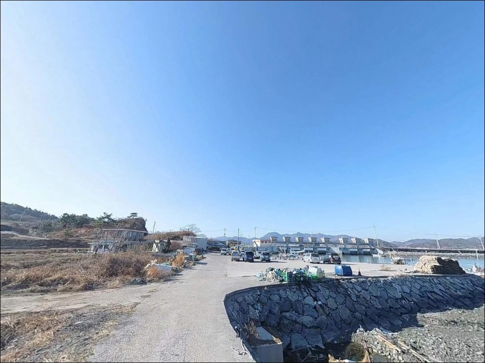
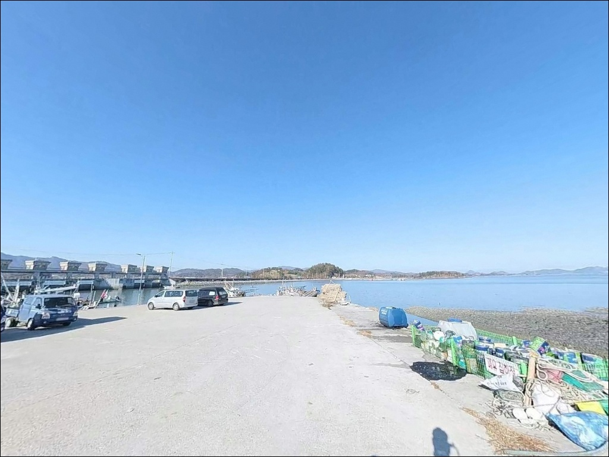
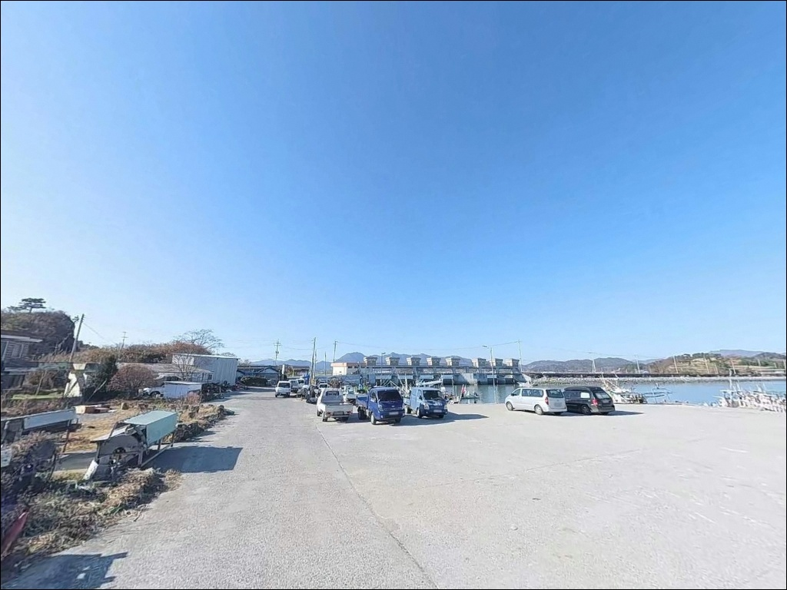
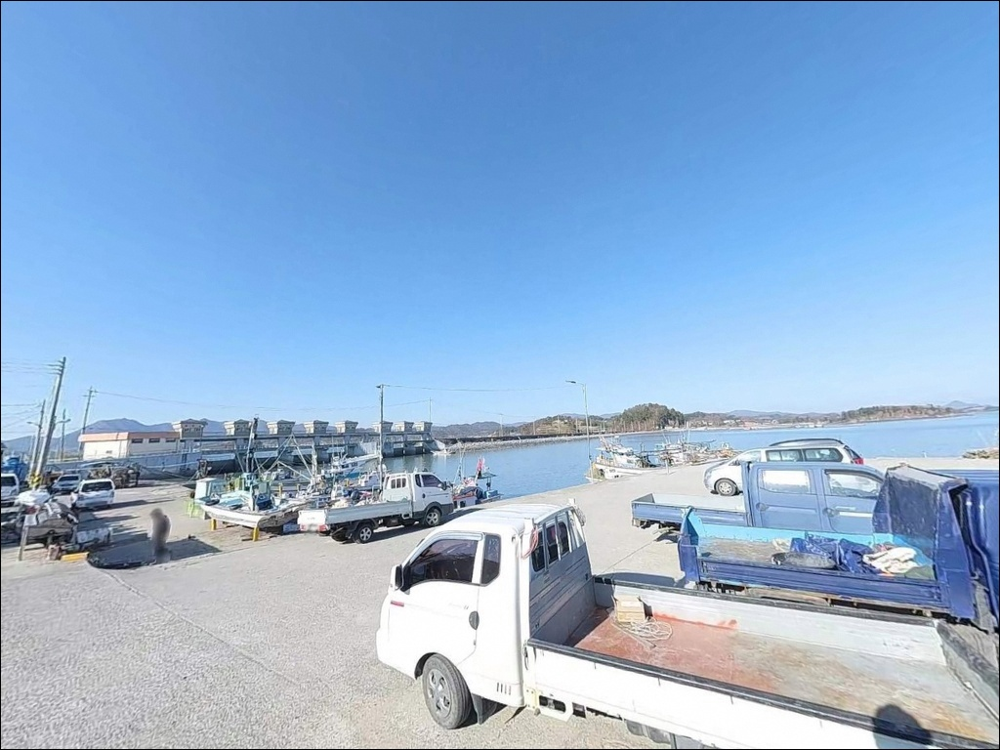
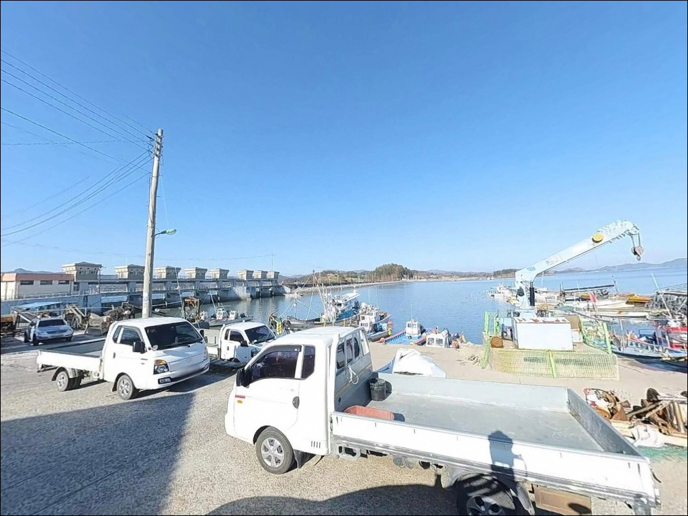
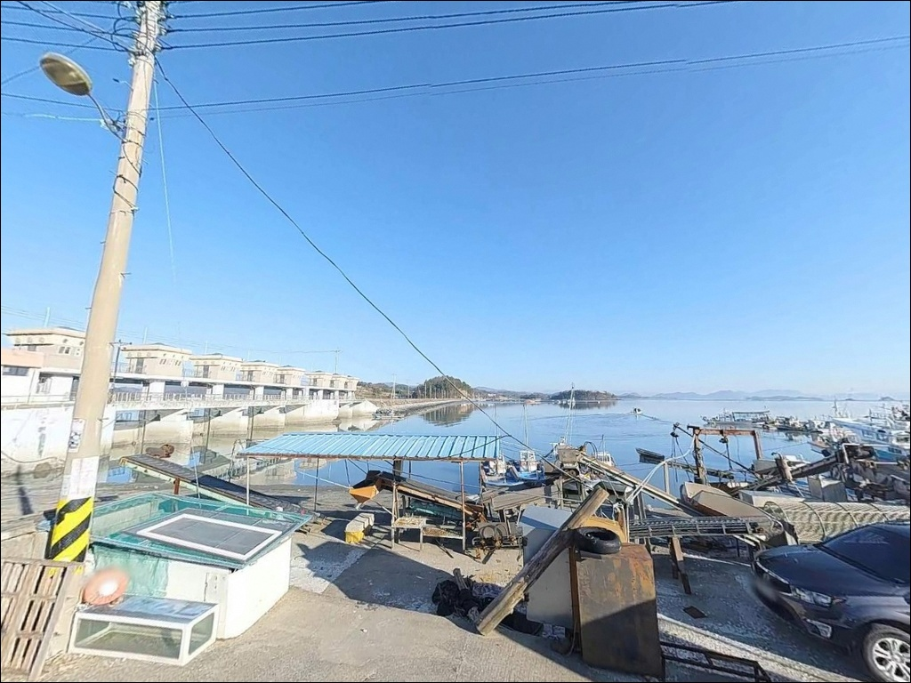
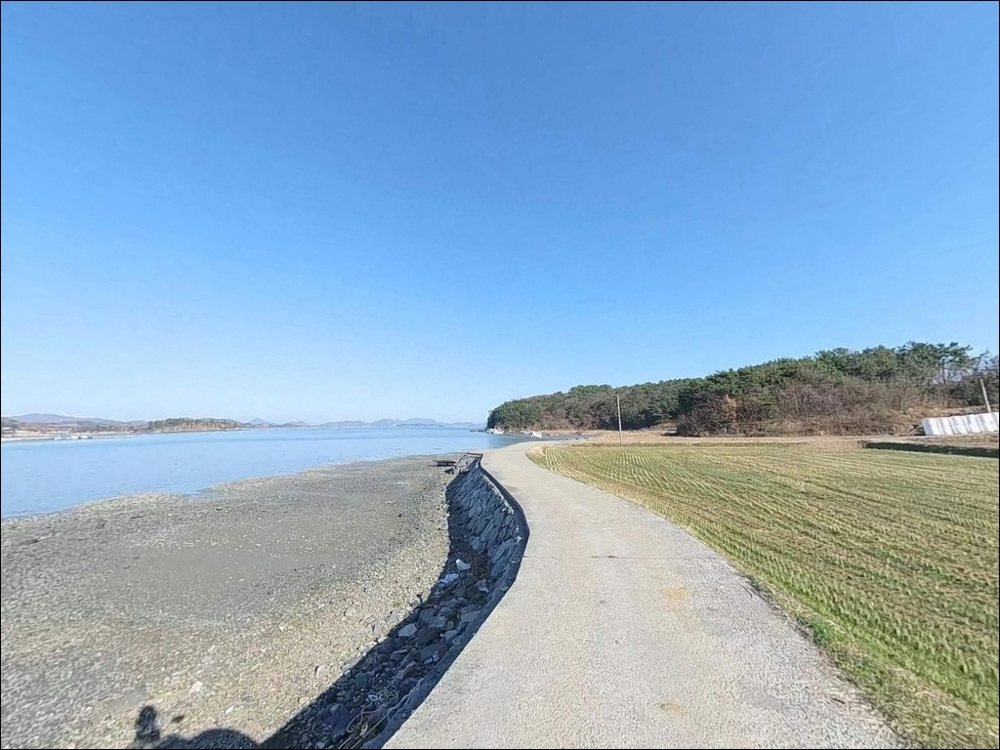

간조 때 수심 다 빠지는 고흥 월정선착장, 만조 전후 2시간 원투낚시 반응
이 페이지에는 광고(제휴 링크 포함)가 있으며, 광고 링크를 통해 구매하면 운영자가 판매 수익 또는 수수료를 받을 수 있습니다. 포인트 사진: 카카오맵 스카이뷰·로드뷰. 이 페이지의 지도·사진 이미지는 카카오맵의 실제 서비스 이미지와 다를 수 있습니다.


포인트 안내
월정선착장
전남 고흥군 남양면 월정리 155-2
고흥만 북단 내만에 자리한 선착장에서
물때 확인 없이 낚시를 시작하면
간조 시 선착장 앞 수심이 거의 사라지는
상황을 맞닥뜨릴 수 있습니다.
만조 전후 2~3시간 안에 집중하는 것이
이 포인트를 공략하는 첫 번째 기준입니다.
월정리는 고흥반도 북단에 위치하며
마을 앞 해안에 길이 약 400m의
해안방풍림이 조성되어 있습니다.
공식 어항으로 등록된 시설이 아니라
아직 낚시 정보가 많이 알려지지 않은
조용한 내만형 포인트입니다.
이 글은
월정선착장의 진입 여건, 물때 기반 낚시 조건,
차박 환경과 대안 포인트에 집중합니다.
조황 단정이나 특정 어종 보장은
이 글의 범위에 포함되지 않습니다.

1. 진입 동선과 차량 접근 여건
월정선착장으로 진입하려면
고흥읍 방면 국도 27호선에서
남양면 방향으로 들어선 뒤
월정리 해안 방향 지방도로를 따라야 합니다.
포장도로가 이어지지만
선착장 가까운 구간에서 도로 폭이
1차선 수준으로 좁아지는 구간이 있어
대향차와의 교행이 어렵습니다.
대형 SUV나 캠핑카보다는
소형 승용차 또는 1톤 미만 차량이
진입과 회차 모두에 유리한 구조입니다.
선착장 끝단은 회차 공간이 부족하므로
진입 전에 마을 안쪽 공터나
선착장 초입 측면 공간을 먼저 확인하는 것이
기본 순서입니다.
주차는 선착장 진입 직전 공터,
계류벽 인근 콘크리트 포장 구간,
방풍림 인근 농로 말단부 중
어선 이동 동선과 겹치지 않는 자리를
먼저 파악한 뒤 정차하는 것이 맞습니다.

2. 차박 환경과 야간 체류 여건
월정리는 소규모 어촌 마을로
야간 차량 통행이 적고
민가 밀집도도 낮은 편입니다.
선착장 인근 방풍림이 북서풍을 어느 정도 막아주고,
해안 방향으로 시야가 열려
차박 프라이버시는 양호한 구간입니다.
다만 선착장 직전 구간은
가로등이 거의 없는 수준이어서
야간 이동 시 헤드랜턴이 필수입니다.
고흥만 내만 구조라 파도가 강하지는 않지만,
동쪽 해면으로는 직접 노출되어
바람 방향과 세기를 당일 아침에 다시 확인하는
습관이 필요합니다.
한 자리에 오래 머무는 캠핑형보다
낚시 후 짧게 체류하는
탐방형 차박에 어울리는 환경입니다.
마을 생활권과 가까운 포인트인 만큼
야간 소음과 장시간 점유는
자제하는 것이 기본 매너입니다.


3. 주변 편의시설 및 인프라 현황
월정선착장 인근에는
확인된 편의점이나 식당이 없습니다.
완전 자급 체제로 진입하는 것이
현실적인 준비 방식이며
식수, 얼음, 여분 채비, 연료 모두
출발 전에 갖춰야 합니다.
반경 3~5km 거리의
남양면사무소 인근 소재지로 이동하면
소규모 식료품점과 주유소를
이용할 수 있습니다.
부족한 물품이 있다면
이 동선을 먼저 활용하는 것이
효율적인 보급 방법입니다.
월정리 해안방풍림은
선착장 서측 해안에 길이 약 400m로
조성된 이팝나무·팽나무 군락입니다.
낚시 포인트 자체의 편의시설과는
별개의 지역 명소이며,
출조 전후 잠깐 들러볼 만한
경관이 형성되어 있습니다.

4. 물때를 중심으로 한 방문 전 준비사항
월정선착장 방문 전에
가장 먼저 확인할 것은 물때입니다.
고흥만 북단 내만 특성상
간조 시 선착장 앞 수심이 거의 사라지는
구간이 발생합니다.
만조 전후 2~3시간이 이 포인트의 핵심 타이밍으로,
바다타임에서 남양면 기준 물때를
출조 전날 반드시 확인해야 합니다.
내만이라도 기상 급변 시
파도와 바람이 강해질 수 있습니다.
기상청 해양 예보를 당일 아침 다시 한번 확인하고
구명조끼와 미끄럼 방지 신발은
기본 안전장비로 반드시 챙겨야 합니다.
갯벌 지형 특성상 만조 시
물이 차오르는 속도가 빠를 수 있어
퇴로를 미리 확인해 두어야 합니다.
마을 선착장이라 어민 작업 도구인
통발이나 그물이 놓여 있는 경우가 있으므로
접촉하지 않도록 주의하는 것이
기본 매너입니다.

5. 지형 기반 낚시 여건 분석
월정선착장은 고흥만 최북단 내만 수역에 위치합니다.
외해와의 거리가 멀고
조류 유입 속도가 느린 내만형 패턴으로,
선착장 앞 바닥은 고운 펄과 사질이
혼합된 갯벌 구조입니다.
이 지형은 문어·낙지·갑오징어 같은
저층 어종의 서식과 이동에 유리한 조건을
갖추고 있습니다.
만조 시 선착장 끝단 기준 수심은
2~4m 수준으로 형성되는 편이며,
간조 시에는 일부 구간에서
바닥이 드러나기 시작합니다.
원투낚시는 멀리 던질수록
수심이 안정된 구간에 닿는 구조라,
채비를 최대한 멀리 보내는 것이
이 지형에 적합한 운용 방식입니다.
물색이 탁한 날에는 원투보다
선착장 계류벽 인근 저층 루어나
문어 채비 탐색이 유효합니다.
굴·피조개 양식이 활발한 해역 특성상
바닥 구조가 비교적 고른 편이며,
이는 문어·낙지류가 이 일대에서
기대할 수 있는 근거입니다.
최신 조황은 출조 전에
"고흥 남양면 조황"으로 꼭 검색해 보시기 바랍니다.


6. 이 포인트에 어울리는 낚시 스타일
이 포인트에서 가장 기본이 되는 낚시는
원투낚시입니다.
내만 갯벌 지형에서는
멀리 채비를 보낸 뒤 바닥층을 천천히 탐색하는 방식이
가장 효율적입니다.
만조 전후 2~3시간이
채비 컨트롤과 어종 활성도가 동시에 살아나는
타이밍입니다.
찌낚시도 이 포인트 구조에 맞습니다.
조류가 완만한 내만 환경에서는
민감한 찌 세팅을 운용하기 쉽고,
만조 시 선착장 계류벽 인근 수심 구간에서
소형 감성돔이나 숭어가
들어오는 패턴을 기대할 수 있습니다.
조류가 느릴수록 찌 감도를 높이는 방향이
이 환경에서 유효합니다.
봄(4~5월)과 가을(8~10월) 야간에는
갑오징어 에깅도 시도해볼 수 있습니다.
선착장 콘크리트 계류벽 인근과
외측 방향 수심 구간을 탐색 대상으로 삼되,
만조 타이밍에 집중하는 것이 기본입니다.
문어 채비는 저층 탐색 방식으로
이 해역에서 연중 시도해볼 수 있는
낚시 스타일입니다.

7. 조류와 물색이 맞지 않을 때의 대안 포인트
월정선착장에서 물때가 맞지 않거나
주차 여건이 여의치 않을 때
첫 번째로 이동할 대안은
관율선착장입니다.
남쪽으로 약 4km 거리의 같은 득량만 라인이며,
규모가 조금 더 크고
진입 여건이 상대적으로 안정적입니다.
고흥만방조제는 월정선착장에서
남동 방향 약 8~10km 거리에 있습니다.
대형 방조제 구조물로
원투낚시 자리가 넓고
낚시 정보도 상대적으로 많이 쌓여 있어
조황 정보를 사전에 확인하기 쉬운
포인트입니다.
녹동항은 약 10km 거리의
고흥 대표 어항입니다.
갑오징어, 낙지, 문어 포인트로 알려져 있으며
방파제와 항 내 연안 낚시 모두 가능합니다.
인근 낚시점에서 현지 조황 확인도 가능해
초행이라면
녹동항을 기점으로 삼고 월정선착장을
병행 탐색하는 동선이 효율적입니다.

물때와 자급 준비만 갖추면
월정선착장은 조용한 선택지입니다
원투낚시나 갑오징어 에깅을 즐기면서
사람이 많지 않은 한적한 포인트를 찾는 낚시인에게
월정선착장은 조건이 잘 맞는 편입니다.
고흥만 내만의 갯벌 지형이라
공략 방식이 단순하고,
아직 알려진 정보가 많지 않아
직접 발품을 팔아야 하는 탐방형 포인트입니다.
다만 물때를 맞추지 않고 방문하거나
편의시설 없이 진입하면
낚시도 차박도 여의치 않아지는 곳입니다.
물때 확인, 자급 준비, 대형 차량 진입로 사전 점검,
이 세 가지를 갖추고 간다면
조용한 고흥만 내만을 온전히 즐길 수 있는
출조가 될 수 있습니다.
방풍림 옆에 차를 세우고
만조 타이밍에 원투 채비를 던져 두는
간단한 낚시와 하룻밤 차박을 함께 즐기고 싶은
낚시인이라면 답사해 둘 만한 포인트입니다.